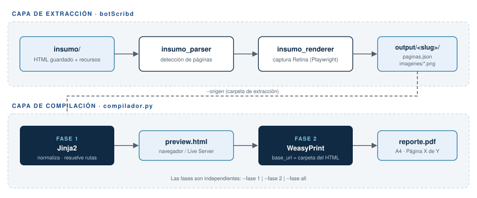

1Contexto y alcance
La extracción documental produce carpetas autocontenidas con metadatos, texto e imágenes. Se requiere un mecanismo reproducible que convierta esas carpetas en reportes técnicos con paginación, encabezados corridos y numeración de figuras y tablas.
1.1Objetivos
- Separar la maquetación (HTML/CSS) de la compilación (PDF).
- Permitir la revisión visual inmediata antes de compilar:
- Vista previa en navegador o Live Server.
- Iteración rápida sobre la plantilla:
- Sin recompilar el PDF en cada cambio.
- Sin dependencias nativas en la Fase 1.
- Garantizar trazabilidad con logs por fase y códigos de salida.
- Soportar tanto
datos.json(reporte) comopaginas.json(extracción).
1.2Fuera de alcance
- Edición colaborativa del contenido.
- Formatos de salida distintos a PDF:
- DOCX.
- EPUB.
- Firma digital del documento.
2Arquitectura de la solución
La solución se organiza en dos capas. La capa de extracción produce la carpeta de origen; la capa de compilación la consume a través del parámetro --origen y genera los artefactos intermedios y finales.

3Componentes y responsabilidades
| Componente | Responsabilidad | Entrada | Salida |
|---|---|---|---|
ResolutorRecursos | Traduce rutas relativas al origen en rutas relativas al HTML y registra faltantes. | Rutas declaradas | URLs relativas |
ConstructorContexto | Valida el esquema, numera tablas y figuras, normaliza listas jerárquicas. | JSON crudo | Contexto Jinja2 |
adaptar_paginas_json | Convierte el esquema de extracción al esquema de reporte. | paginas.json | Esquema reporte |
renderizar_plantilla | Renderiza la plantilla con autoescape y StrictUndefined. | Contexto | preview.html |
fase_2_pdf | Maqueta con WeasyPrint y escribe el PDF de forma atómica. | preview.html | reporte.pdf |
Los componentes de la Fase 1 no importan WeasyPrint: la vista previa funciona aun sin librerías nativas (Pango).
3.1Configuración del pipeline
El bloque siguiente se carga desde un archivo externo ubicado en la carpeta de origen mediante la clave archivo, demostrando la resolución relativa de insumos de texto.
# Configuración del pipeline de compilación documentalpipeline: nombre: reporte-arquitectura fases: - id: html motor: jinja2 plantilla: plantilla.html salida: preview.html - id: pdf motor: weasyprint entrada: preview.html salida: reporte.pdf validaciones: estricto: true # aborta si falta una imagen o fuente limite_paginas: null # solo aplica a paginas.json4Flujo de compilación
La Fase 2 utiliza la carpeta del HTML como base_url. De esta forma, imagenes/arquitectura.svg se resuelve exactamente igual que en el navegador.
from weasyprint import HTMLdef compilar(html_path: Path, pdf_path: Path) -> int: base_url = html_path.parent.as_uri() + "/" documento = HTML(filename=str(html_path), base_url=base_url).render() temporal = pdf_path.with_name(pdf_path.name + ".tmp") documento.write_pdf(str(temporal)) # escritura atómica os.replace(temporal, pdf_path) return len(documento.pages)5Matriz de pruebas
La tabla siguiente se marca con "dividir": true: puede extenderse a varias páginas y su encabezado se repite automáticamente en cada salto.
| ID | Escenario | Fase | Resultado esperado | Estado |
|---|---|---|---|---|
| CP-01 | Ejecución con valores por defecto | all | HTML y PDF generados | OK |
| CP-02 | --fase 1 con origen válido | 1 | preview.html generado | OK |
| CP-03 | --fase 1 con origen inexistente | 1 | Aviso y código 1 | OK |
| CP-04 | --fase 2 sin HTML previo | 2 | Aborta con código 1 | OK |
| CP-05 | --fase 2 con HTML vacío | 2 | Aborta con código 1 | OK |
| CP-06 | --salida solo con nombre | 2 | PDF dentro de --origen | OK |
| CP-07 | --salida con ruta relativa | 2 | PDF en la ruta indicada | OK |
| CP-08 | --salida sin extensión .pdf | 2 | Se agrega .pdf | OK |
| CP-09 | JSON con error de sintaxis | 1 | Línea y columna reportadas | OK |
| CP-10 | Imagen declarada inexistente | 1 | Aviso + marcador visual | OK |
| CP-11 | Imagen inexistente con --estricto | 1 | Aborta con código 1 | OK |
| CP-12 | Esquema paginas.json | 1 | Adaptación automática | OK |
| CP-13 | paginas.json con --limite-paginas 10 | 1 | Solo 10 figuras | OK |
| CP-14 | Tabla con filas incompletas | 1 | Relleno + aviso | OK |
| CP-15 | Tipo de bloque desconocido | 1 | Bloque omitido + aviso | OK |
| CP-16 | Plantilla con error de sintaxis | 1 | Archivo y línea reportados | OK |
| CP-17 | Fuentes en fuentes/ | 1 | @font-face relativo | OK |
| CP-18 | HTML y recursos en unidades distintas | 1 | URI file:// absoluta | OK |
| CP-19 | PDF abierto en visor (Windows) | 2 | Mensaje de permiso | OK |
| CP-20 | WeasyPrint sin Pango | 2 | Diagnóstico de DLL | OK |
| CP-21 | Datos más recientes que el HTML | 2 | Aviso de desactualización | OK |
| CP-22 | Tabla larga dividida | 2 | thead repetido | OK |
| CP-23 | Bloque de código extenso | 2 | Ajuste de línea | OK |
| CP-24 | Figura SVG | 2 | Vector nítido | OK |
| CP-25 | Índice con números de página | 2 | target-counter | OK |
| CP-26 | Marcadores PDF por encabezado | 2 | Árbol de bookmarks | OK |
| CP-27 | Metadatos PDF (autor, título) | 2 | Propiedades del PDF | OK |
| CP-28 | Interrupción con Ctrl+C | all | Código 130 | OK |
| CP-29 | Variable COMPILADOR_ORIGEN | all | Origen por defecto alterado | OK |
| CP-30 | Texto con caracteres <script> | 1 | Escapado por autoescape | OK |
| CP-31 | Ancho CSS inválido en figura | 1 | Valor por defecto + aviso | OK |
| CP-32 | Sección con nueva_pagina | 2 | Salto de página previo | OK |
| CP-33 | Lista con 4 niveles de anidación | 1 | Estilo del nivel 3 reutilizado | OK |
| CP-34 | Resumen como lista de párrafos | 1 | Párrafos independientes | OK |
| CP-35 | Fila de tabla como objeto | 1 | Mapeo por título de columna | OK |
| CP-36 | Fecha ISO con hora | 1 | Formato AAAA-MM-DD | OK |
6Riesgos y mitigaciones
| Riesgo | Impacto | Mitigación |
|---|---|---|
| Dependencias nativas de WeasyPrint en Windows | Alto | Import diferido, autodetección de MSYS2 y mensaje de diagnóstico. |
| Documentos con miles de páginas | Medio | Aviso por umbral y opción --limite-paginas. |
| Rutas absolutas rotas al mover carpetas | Alto | Rutas siempre relativas al HTML generado. |
| PDF corrupto por fallo a mitad de escritura | Medio | Escritura en .tmp y reemplazo atómico. |